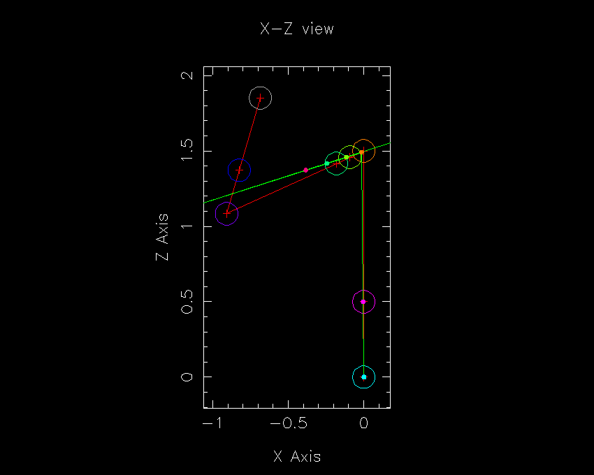
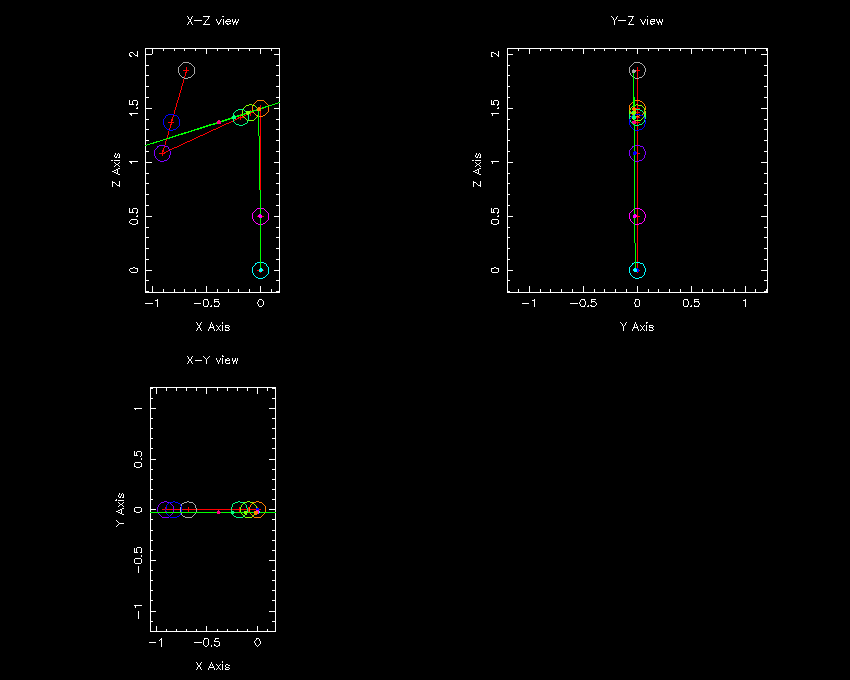

This page describes a new facility for doing graphical debugging of instrument simulations created with McStas. A schematic diagram of the instrument is drawn, and the path of each neutron as it passes through the instrument is plotted. The following are two examples (of a triple-axis spectrometer; these pictures clearly show a problem in the monochromator (orange circle)).


The instrument is shown as the red crosshairs connected with red lines. The components appear as circles of different colours. The neutron path is shows in green. A small dot in the same color as a component indicates the point where the neutron leaves that component. A new neutron is shown after a mouseclick or a keypress.
The graphic display is obtained by creating a special instrument simulation that produces debugging output about neutron states etc. The output of this simulation is then fed into the program "display", which reads the information and converts it into graphics using PGPLOT.
The instrument simulation with debugging output is obtained by defining the preprocessor macro DEBUG when compiling. For example
gcc -o instr -DDEBUG instr.c mcstas-r.c -lmIt may be instructive to run the generated simulation
instr to
see the kind of output produced.
To get the graphics display, the output of
A hint when debugging instruments is to use another pipe to avoid the tedious
entering of instrument parameters for each run. For example,
instr is fed into
./instr | ./display
./instr | ./display multi
(the latter "multi" option views the instrument from three directions).
echo 0.12 0.45 1.2 0.123 1.5 0.1 | ./instr | ./display
(yes, angles are currently entered in radians, but this will probably
change!). This is also useful to set up a whole scan in a simple shell script.
Kristian Nielsen
<kristian.nielsen@risoe.dk> /
Oct 2, 1998.